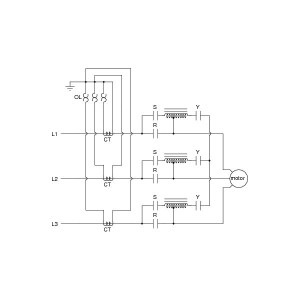

3 phase induction motor can be started by four methods. These are –
- Direct on line starter (D.O.L)
- Autotransformer starter
- Star-delta starter
- Primary resistor / reactor starting.

Therefore, it is quite easy to understand that, autotransformer is used in this type of starting method. In autotransformer starting method the reduced voltage is obtained by taking tapping at suitable points from a three phase autotransformer. The autotransformer are generally tapped at the 50, 60 and 80 percent points, so that adjustment at these voltages may be made for proper starting torque requirements. This type of starter may be either manually or magnetically operated. The manual one is essentially a multi-pole double throw switch. It consists of three sets of contacts starting, running (both static) and the movable contacts. The operating handle is spring loaded. When operating handle is moved to start position, the movable contacts are moved against the starting contacts. This energises the star-connected auto-transformer. After the motor has accelerated to about full speed, the operating handle is moved to run position. This opens starting contacts i.e. disconnects the autotransformer from the line. Overload protection is provided by thermal overload relays.
Advantages :
- High torque is obtained per ampere of supply current
- Suitable for long starting periods.
 by
by